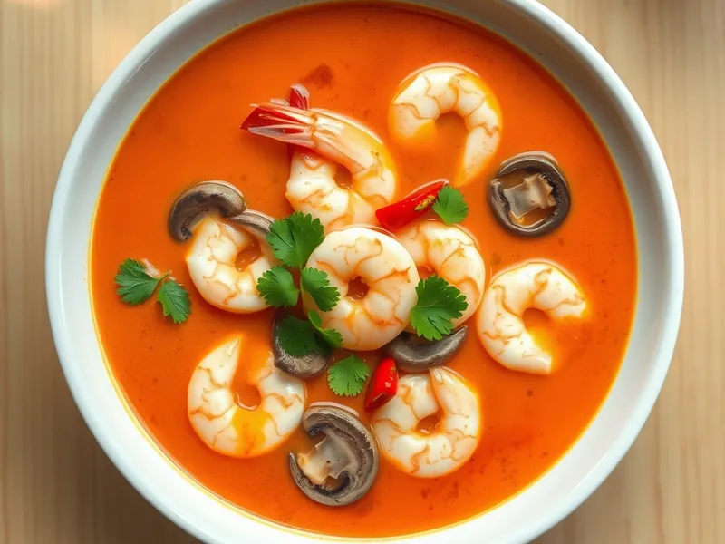

Том ям с креветками
Острый кисло-сладкий тайский суп с креветками, грибами и кокосовым молоком
30 мин3 порц.280 ккал на порциюБ 25 · Ж 17 · У 9Азиатская кухня
Открыть в приложении: порции, таймеры, список покупок
Продукты на 3 порц.
- Креветки300 г
- Шампиньоны200 г
- Кокосовое молоко200 мл
- Помидоры1 шт
- Имбирь20 г
- Перец чили1 шт
- Лимон0,5 шт
- Чеснок2 зуб.
- Соевый соус1 ст. л.
- Сахар1 ч. л.
- Кинза по желаниюпо вкусу
- Вода800 мл
Как готовить
- Нарежьте имбирь тонкими кружками, чили кольцами, чеснок пластинками. Положите в кипящую воду и варите на среднем огне 5 минут, чтобы бульон стал ароматным.
- Добавьте шампиньоны четвертинками и помидор дольками, варите 5 минут.
- Влейте кокосовое молоко, соевый соус, добавьте сахар и доведите почти до кипения на среднем огне.
- Положите очищенные креветки и варите 2-3 минуты, пока они не станут розовыми и не свернутся колечком.
- Снимите с огня, влейте сок лимона и попробуйте: суп должен быть одновременно острым, кислым и чуть сладким.
- Разлейте по тарелкам и посыпьте кинзой.
Совет. Не переваривайте креветки: уже через 4 минуты кипения они становятся резиновыми.